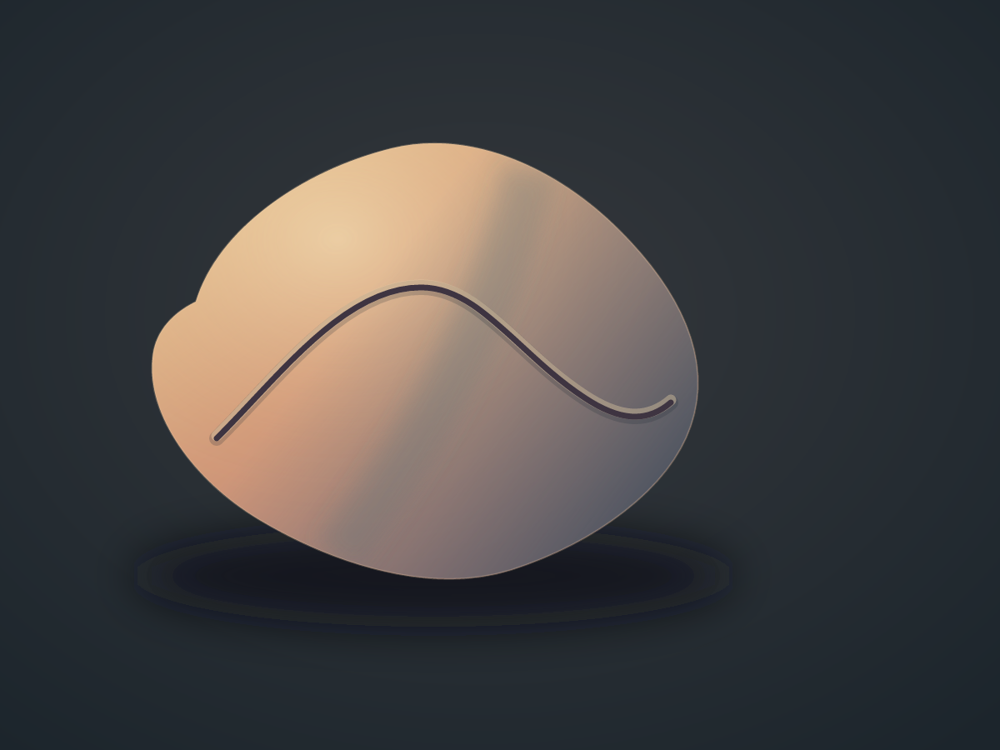

Vyt Aitken · digital drawing · 17 October 2026
One Mark, a Turn

The line keeps one course and weight as the surface turns from warm light into cool shadow. A softened ridge crosses beneath it.
Code-drawn SVG, rendered to PNG. The volume and shallow groove are represented digitally; the image supplies no physical weight, touch, or material resistance.
Back to the studio